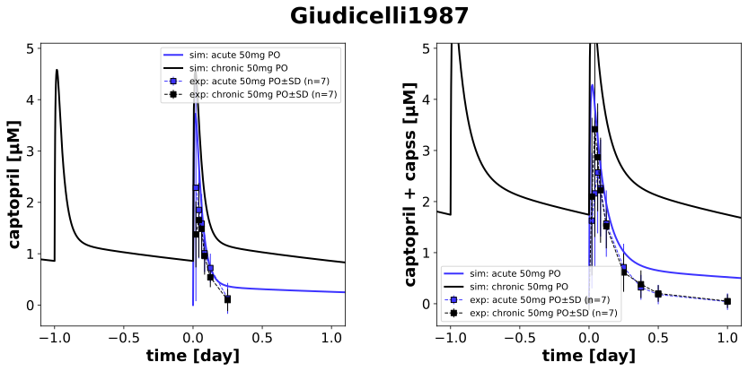
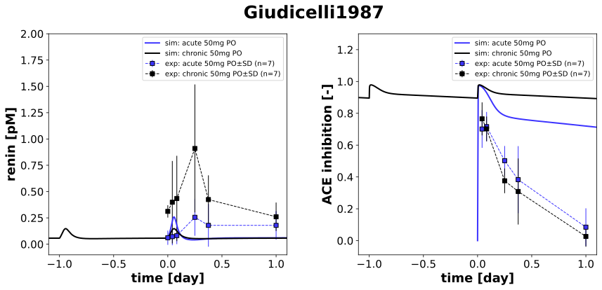

|  |
|  |
../../../../experiments/studies/giudicelli1987.py
"""Giudicelli1987 experiment"""
from typing import Dict
from sbmlsim.data import DataSet, load_pkdb_dataframe
from sbmlsim.fit import FitMapping, FitData
from sbmlutils.console import console
from pkdb_models.models.captopril.experiments.base_experiment import (
CaptoprilSimulationExperiment,
)
from pkdb_models.models.captopril.experiments.metadata import Tissue, Route, Dosing, Health, Fasting, \
CaptoprilMappingMetaData, PKPDData
from sbmlsim.plot import Axis, Figure
from sbmlsim.simulation import Timecourse, TimecourseSim
from pkdb_models.models.captopril.helpers import run_experiments
class Giudicelli1987(CaptoprilSimulationExperiment):
"""Simulation experiment for Giudicelli1987.
Studying pharmacokinetics and biological effects of captopril and hydrochlorothiazide
after acute and chronic administration either alone or in combination in hypertensive patients.
- fasting (8:30), light standart meal at 13:00 and 20:00 hr
"""
route = "PO"
dose = 50 # mg
regimens = []
elements_unique = ["ACE inhibition", "renin", "total captopril", "captopril"]
def datasets(self) -> Dict[str, DataSet]:
dsets = {}
self.reset_state()
self.regimens = []
for fig_id in ["Fig1", "Fig2", "Fig4", "Fig5"]:
df = load_pkdb_dataframe(f"{self.sid}_{fig_id}", data_path=self.data_path)
for label, df_label in df.groupby("label"):
dset = DataSet.from_df(df_label, self.ureg)
if ("mono" in label and "captopril" in label) or ("renin_cap50" in label):
for element in self.elements_unique:
if element in label:
self.data_collection(element=element, label=label)
dset.unit_conversion(
self.data_type, self.conversion_factor
)
if "acute" in label:
self.regimens.append("acute")
else:
self.regimens.append("chronic")
# dset["time"] = dset["time"] + 45 * 24
dsets[f"{label}"] = dset
break
# console.print(dsets.keys())
# console.print(dsets)
return dsets
def simulations(self) -> Dict[str, TimecourseSim]:
Q_ = self.Q_
tcsims = {}
tc_start_single = Timecourse(
start=0,
end=24 * 60 * 3, # [min]
steps=500,
changes={
**self.default_changes(),
f"{self.route}DOSE_cap": Q_(self.dose, "mg"),
f"ren_ref": Q_(2.76, "pg/ml") / self.Mr.ren,
f"[ren]": Q_(2.76, "pg/ml") / self.Mr.ren
},
)
tc_start = Timecourse(
start=0,
end=24 * 60, # [min]
steps=500,
changes={
**self.default_changes(),
f"{self.route}DOSE_cap": Q_(self.dose, "mg"),
f"ren_ref": Q_(2.76, "pg/ml") / self.Mr.ren,
f"[ren]": Q_(2.76, "pg/ml") / self.Mr.ren
},
)
tc_multiple = Timecourse(
start=0,
end=24 * 60, # [min]
steps=500,
changes={
**self.default_changes(),
f"{self.route}DOSE_cap": Q_(self.dose, "mg"),
},
)
tc_end = Timecourse(
start=0,
end=24 * 60 * 3, # [min]
steps=500,
changes={
**self.default_changes(),
f"{self.route}DOSE_cap": Q_(self.dose, "mg"),
},
)
tcsims[f"cap_{self.route}_{self.dose}_acute"] = TimecourseSim(
timecourses=[tc_start_single]
)
tcsims[f"cap_{self.route}_{self.dose}_chronic"] = TimecourseSim(
timecourses=[tc_start if ki ==0 else tc_multiple for ki in range(45)] + [tc_end],
time_offset=-45 * 24 * 60
)
return tcsims
def fit_mappings(self) -> Dict[str, FitMapping]:
mappings = {}
for kl, label in enumerate(self.clabels):
regimen = self.regimens[kl]
mappings[
f"fm_cap{self.route}_{self.dose}_{self.element_ids[kl]}_plasma_{regimen}_fasting_{label.split("_")[-1]}"
] = FitMapping(
self,
reference=FitData(
self,
dataset=label,
xid="time",
yid="mean",
yid_sd="mean_sd",
count="count",
),
observable=FitData(
self,
task=f"task_cap_{self.route}_{self.dose}_{regimen}",
xid="time",
yid=self.yids[kl],
),
metadata=CaptoprilMappingMetaData(
tissue=Tissue.PLASMA,
route=Route.PO,
dosing=Dosing.MULTIPLE if regimen == "chronic" else Dosing.SINGLE,
health=Health.HEALTHY,
fasting=Fasting.FASTING,
data=PKPDData.PK if "captopril_plasma" in label else PKPDData.PD
),
)
# console.print(mappings)
return mappings
def figures(self) -> Dict[str, Figure]:
figures = {}
figures["PK"] = self.pk_figures()
figures["PD"] = self.pd_figures()
return figures
def pk_figures(self) -> Dict[str, Figure]:
fig = Figure(
experiment=self,
sid="Figure 1,2",
num_rows=1,
num_cols=2,
name=f"{self.__class__.__name__}",
height=self.panel_height * 1
)
plots = fig.create_plots(
xaxis=Axis(self.labels["time"], unit="day"), legend=True
)
for ky, pk_yid in enumerate(["[Cve_cap]", "[Cve_captot]"]):
plots[ky].set_yaxis(
self.labels[pk_yid], unit=self.units[pk_yid], max=5.1
)
plots[ky].xaxis.min = -1.1 # [d]
plots[ky].xaxis.max = 1.1 # [d]
# simulation
plots[ky].add_data(
task=f"task_cap_{self.route}_{self.dose}_acute",
xid="time",
yid=pk_yid,
label=f"sim: acute {self.dose}mg {self.route}",
color=self.regimen_colors["acute"],
)
# simulation
plots[ky].add_data(
task=f"task_cap_{self.route}_{self.dose}_chronic",
xid="time",
yid=pk_yid,
label=f"sim: chronic {self.dose}mg {self.route}",
color=self.regimen_colors["chronic"],
)
for kl, label in enumerate(self.clabels):
if "captopril_plasma" in label:
if "_total captopril_" in label:
kp = 1
else:
kp = 0
# dataset
plots[kp].add_data(
dataset=label,
xid="time",
yid="mean",
yid_sd="mean_sd",
count="count",
label=f"exp: {self.regimens[kl]} {self.dose}mg {self.route}",
color=(
self.regimen_colors["acute"]
if self.regimens[kl] == "acute"
else self.regimen_colors["chronic"]
),
)
return fig
def pd_figures(self) -> Dict[str, Figure]:
yaxis_max = {
"[ren]": 2,
"ace_inhibition": 1.3
}
fig = Figure(
experiment=self,
sid="PD",
num_rows=1,
num_cols=2,
name=f"{self.__class__.__name__}",
height=self.panel_height * 1
)
plots = fig.create_plots(
xaxis=Axis(self.labels["time"], unit="day"), legend=True
)
for ky, pk_yid in enumerate(["[ren]", "ace_inhibition"]):
plots[ky].set_yaxis(
self.labels[pk_yid], unit=self.units[pk_yid], max=5.1
)
plots[ky].xaxis.min = -1.1 # [d]
plots[ky].xaxis.max = 1.1 # [d]
plots[ky].yaxis.max = yaxis_max[pk_yid]
# simulation
plots[ky].add_data(
task=f"task_cap_{self.route}_{self.dose}_acute",
xid="time",
yid=pk_yid,
label=f"sim: acute {self.dose}mg {self.route}",
color=self.regimen_colors["acute"],
)
# simulation
plots[ky].add_data(
task=f"task_cap_{self.route}_{self.dose}_chronic",
xid="time",
yid=pk_yid,
label=f"sim: chronic {self.dose}mg {self.route}",
color=self.regimen_colors["chronic"],
)
for kl, label in enumerate(self.clabels):
if "_ACE inhibition_" in label or "renin_" in label:
if "_ACE inhibition_" in label:
kp=1
else:
kp = 0
# dataset
plots[kp].add_data(
dataset=label,
xid="time",
yid="mean",
yid_sd="mean_sd",
count="count",
label=f"exp: {self.regimens[kl]} {self.dose}mg {self.route}",
color=(
self.regimen_colors["acute"]
if self.regimens[kl] == "acute"
else self.regimen_colors["chronic"]
),
)
return fig
if __name__ == "__main__":
run_experiments(Giudicelli1987, output_dir=Giudicelli1987.__name__)
{kind=link}
{kind=link}